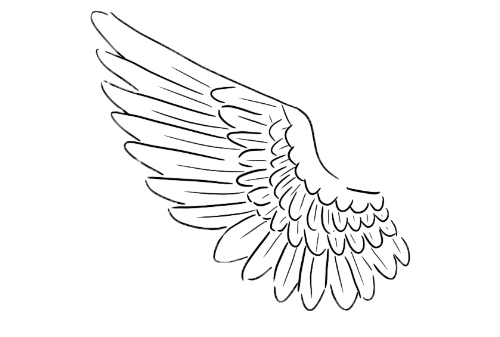
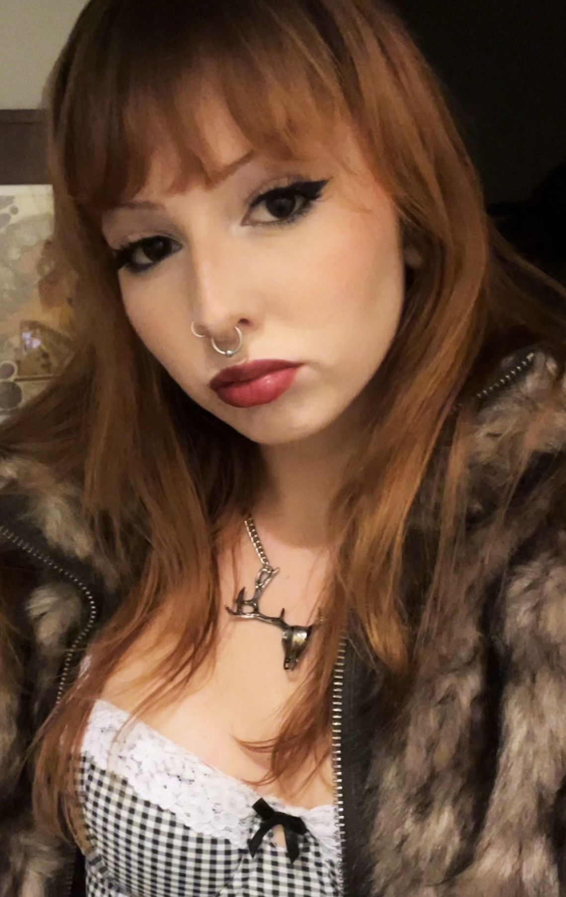
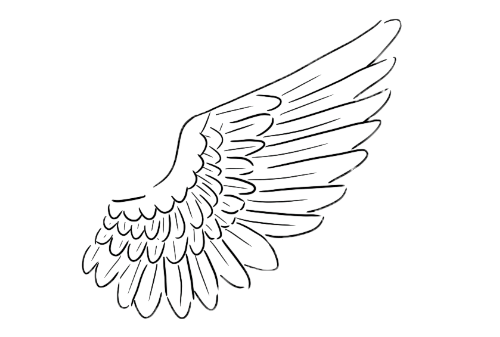

Hi! My name is Ella and I am a third year visual communications student at SFSU. I switched from psychology to design in my second year of school to pursue my passion for graphic design.
I have always been interested in art from a young age, but never imagined being able to peruse a career in a creative field. After taking a photography class in high school and being able to work with Photoshop, I realized that graphic design really interests me. Although Im not entirely sure what specific industry I want to go into yet, I am currently interested in publication design and branding.
I was raised in Maine and moved to Los Angeles my freshman year of high school, and I now reside in Oakland. When I’m mot in school, you can find my drawing and working on a variety of different crafts like lino-carving, collaging, and jewelry making. I am also a big music lover and am constantly looking for new music or learning new songs on guitar. Some of my favorite artists include Alice In Chains, Elliott Smith, The Sundays, Lana Del Rey, and The Microphones. I have also been getting more into cooking recently and love trying out new recipes for my roommate to try.